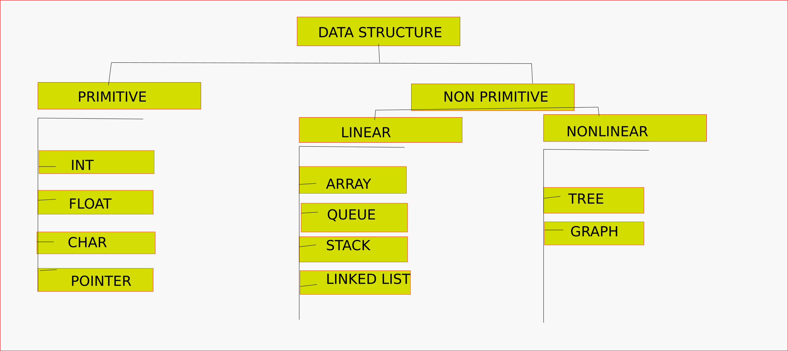
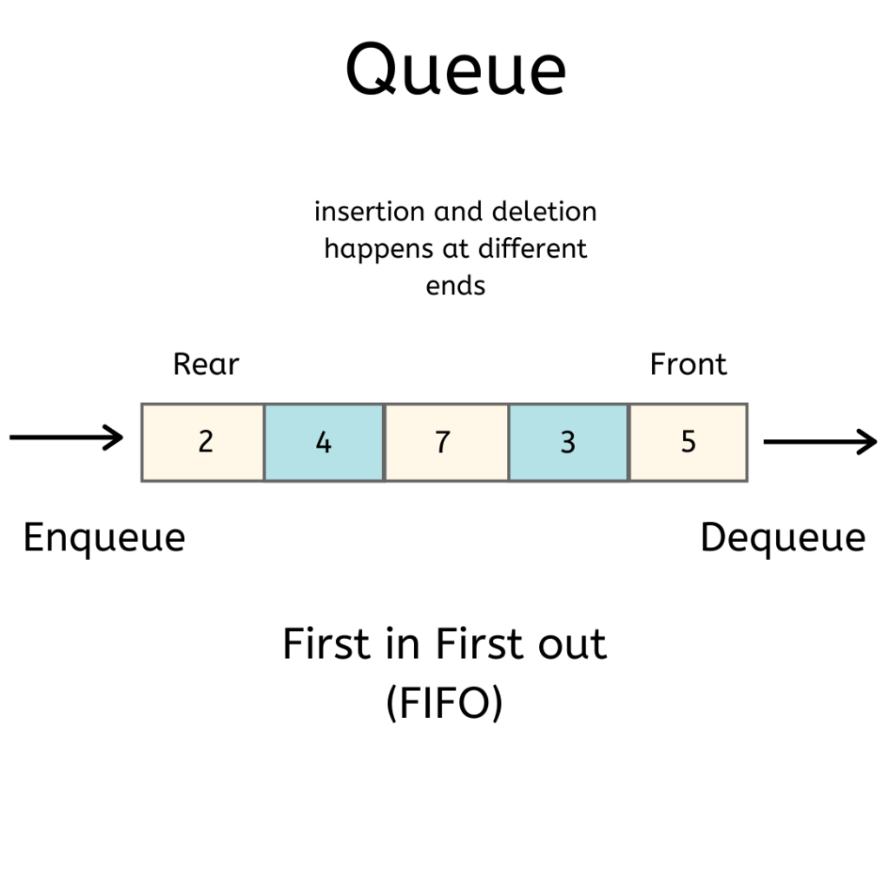

MODULE I
DATA STUCTURE

ARRAY
Array is a container which can hold a fix number of items and these items should be of the same type. Most of the data structures make use of arrays to implement their algorithms. Following are the important terms to understand the concept of Array

| Element | Each item stored in an array is called an element. |
|---|---|
| Index | Each location of an element in an array has a numerical index, which is used to identify the element. |
| Properties/characteristics of an Array |
|---|
| 1) An array is a derived data type, which is defined using basic data types like int, char, float and even structures (which is called the array of structures). |
| 2) Array elements are stored in contiguous memory blocks/subsequent memory blocks in primary memory. |
| 3) Array name represents its base address. The base address is the address of the first element of the array. |
| 4) Array’s index starts with 0 and ends with N-1. Here, N stands for the number of elements. For Example, there is an integer array of 5 elements, then it’s indexing will be 0 to 4. |
| 5) Only constants and literal values (an integer value like 5, 10, 12,...) can be assigned the number of elements in an array. |
| 6) While declaring an array, we can also assign each element with 0 like this.
Eg: int age[10]={0}; |
| 7) There is no need to provide the number of elements while declaring an array,
but we have to provide the values at the time of declaration. In this case,
array size will be the number of values that you have provided.
Eg: int age[]={21,22,25,45,56}; |
//SAMPLE PROGRAME #include |
| Basic Operations | |
|---|---|
| Traverse | print all the array elements one by one. |
| Insertion | Adds an element at the given index. |
| Deletion | Deletes an element at the given index. |
| Search | Searches an element using the given index or by the value. |
| Update | Updates an element at the given index. |
STACK
A stack is an Abstract Data Type (ADT), commonly used in most programming languages. It is named stack as it behaves like a real-world stack
- A real-world stack allows operations at one end only
- LIFO data structure (Last-in-first-out)
- In stack terminology, insertion operation is called PUSH operation and removal operation is called POP operation.

A stack can be implemented by means of Array, Structure, Pointer, and Linked List. Stack can either be a fixed size one or it may have a sense of dynamic resizing
| Basic Operations | |
|---|---|
| push() | Pushing (storing) an element on the stack. |
| pop() | Removing (accessing) an element from the stack. |
| peek() | get the top data element of the stack, without removing it. |
| isFull() | check if stack is full. |
| isEmpty() | check if stack is empty. |
//peek operation
int peek() {
return stack[top];
}
//check stack is full
bool isfull() {
if(top == MAXSIZE)
return true;
else
return false;
}
//check stack is empty
bool isempty() {
if(top == -1)
return true;
else
return false;
}
//stack PUSH
void push(int data) {
if(!isFull()) {
top = top + 1;
stack[top] = data;
} else {
printf("Could not insert data, Stack is full.\n");
}
}
//stack POP
int pop(int data) {
if(!isempty()) {
data = stack[top];
top = top - 1;
return data;
} else {
printf("Could not retrieve data, Stack is empty.\n");
}
}
|
QUEUE
Queue is an abstract data structure, somewhat similar to Stacks. Unlike stacks, a queue is open at both its ends. One end is always used to insert data (enqueue) and the other is used to remove data (dequeue). Queue follows First-In-First-Out methodology, i.e., the data item stored first will be accessed first.
As in stacks, a queue can also be implemented using Arrays, Linked-lists, Pointers and Structures. For the sake of simplicity, we shall implement queues using one-dimensional array.
| Basic Operations | |
|---|---|
| enqueue() | add (store) an item to the queue. |
| dequeue() | remove (access) an item from the queue. |
| peek() | get the top data element of the stack, without removing it. |
| isFull() | check if stack is full. |
| isEmpty() | check if stack is empty. |
//peek operation
int peek() {
return queue[front];
}
//check queue is full
bool isfull() {
if(rear == MAXSIZE - 1)
return true;
else
return false;
}
//check queue is empty
bool isempty() {
if(front < 0 || front > rear)
return true;
else
return false;
}
//Enqueue Operation
int enqueue(int data){
if(isfull())
return 0;
rear = rear + 1;
queue[rear] = data;
return 1;
}
//Dequeue Operation
int dequeue() {
if(isempty())
return 0;
int data = queue[front];
front = front + 1;
return data;
}
|
TREE
Tree represents the nodes connected by edges. We will discuss binary tree or binary search tree specifically.
| Terms | Definitions |
|---|---|
| Path | Path refers to the sequence of nodes along the edges of a tree. |
| Root | The node at the top of the tree is called root. There is only one root per tree and one path from the root node to any node. |
| Parent | Any node except the root node has one edge upward to a node called parent |
| Child | The node below a given node connected by its edge downward is called its child node |
| Leaf | The node which does not have any child node is called the leaf node. |
| Subtree | Subtree represents the descendants of a node |
| Visiting | Visiting refers to checking the value of a node when control is on the node. |
| Traversing | Traversing means passing through nodes in a specific order. |
| Levels | Level of a node represents the generation of a node. If the root node is at level 0, then its next child node is at level 1, its grandchild is at level 2, and so on. |
| keys | Key represents a value of a node based on which a search operation is to be carried out for a node |
1.1 Binary Tree
Binary Tree is a special datastructure used for data storage purposes.
A binary tree has a
special
condition that each node can have a maximum of two children.
A binary tree has the benefits
of both
an ordered array and a linked list as search is as quick as in a sorted array and insertion or
deletion operation are as fast as in linked list.

1.2 Binary Search Tree
Binary Search tree exhibits a special behavior. A node's left child must have a value less than its parent's value and the node's right child must have a value greater than its parent value.

The basic operations that can be performed on a binary search tree data structure, are the following
| Operations | Definitions |
|---|---|
| Insert | Inserts an element in a tree/create a tree |
| Search | Searches an element in a tree |
| Preorder Traversal | Traverses a tree in a pre-order manner |
| Inorder Traversal | Traverses a tree in an in-order manner. |
| Postorder Traversal | Traverses a tree in a post-order manner |